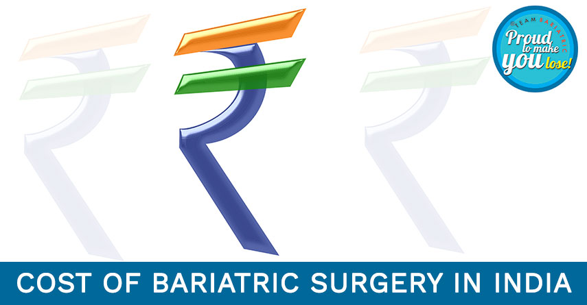

Embracing Lifelong Learning: Insights from the "Food as Medicine" Course
Learning should never stop….because if it stops, your growth stops.
“Learning never exhausts the mind.” Leonardo da Vinci
With this philosophy, I enrolled myself for a course with Monash University titled “Food as Medicine”. It was an interesting course, so thought to share some salient points with you all.
Food has been used a medicine since ancient times, in Asian and Indian civilizations it has been written and talked about a lot. In fact most of the medicines in the ancient Indian pharmacopeia The Ayurveda are derived from common food items and herbs. The Indian food system, if followed simply is one of the healthiest diets. During this course also a lot of times emphasis has been given to Asian and Indian cooking ingredients.
When it comes to health, nothing can beat fresh food made in your own kitchen. No preservatives nor any artificial color or flavors. No synthetics, pure and if u are a health freak it can be organic also.
In today’s article I would like to talk a little about the Indian Food System, it is a very unique and health-friendly cooking practice. Indians prefer cooking each meal fresh, right from chopping the vegetables (frozen vegetables are also preferred to be avoided).
Looking to integrate healthy eating into your lifestyle? Connect with a top dietician in Delhi to personalize your diet and unlock the benefits of fresh, wholesome foods. Get expert guidance today!
Back to Blog